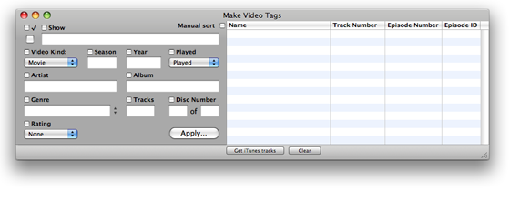
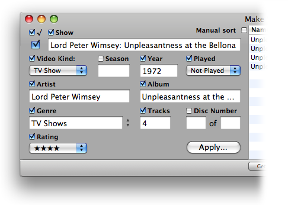
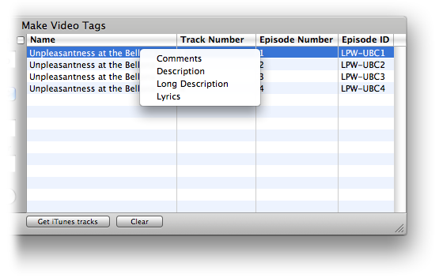
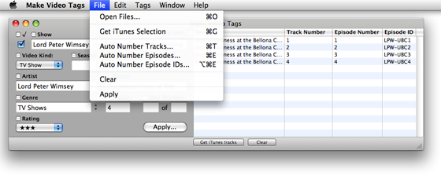
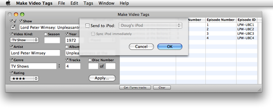

Make Video Tags Features
Make Video Tags is a simple application that allows you to enter some basic video-centric tag data to a group of selected video tracks in iTunes.

I wrote Make Video Tags initially for my own use to simply and quickly apply tags to tracks after ripping DVDs with Handbrake. It is not intended to be a "deluxe" video tag editor by any means.
Edit Common Video Tags. |
|
|  |
Make Video Tags will let you enter the same data for a group of tracks using these video tags. Its interface works like iTunes' Multiple Item Information window: only the checkmarked tags will be applied to your selected tracks. |
Specific Video Track Tags |
|
|  |
Additionally, Name, Track Number, Episode Number and Episode ID tags for individual tracks can be entered. A contextual-menu will enable you to view and edit a track's Comments, Description, Long Description and Lyrics |
Auto Numbering |
 |
Conveniently enter Track Number, Episode Number or Episode ID information sequentially. Episode ID numbers will be appended to any current Episode ID text. |
Send/Sync to iPod |
 |
If one or more iPods are detected you will see the option to "Send to iPod" after choosing to apply the tag data to your iTunes tracks. |
To get started, see the Using Make Video Tags page.